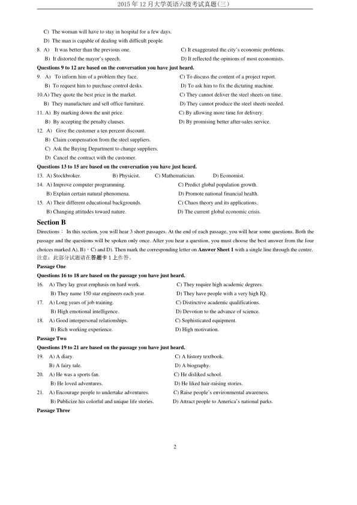
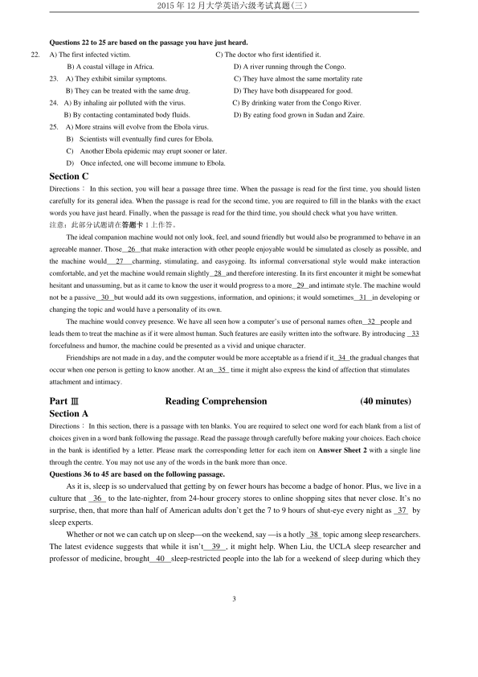
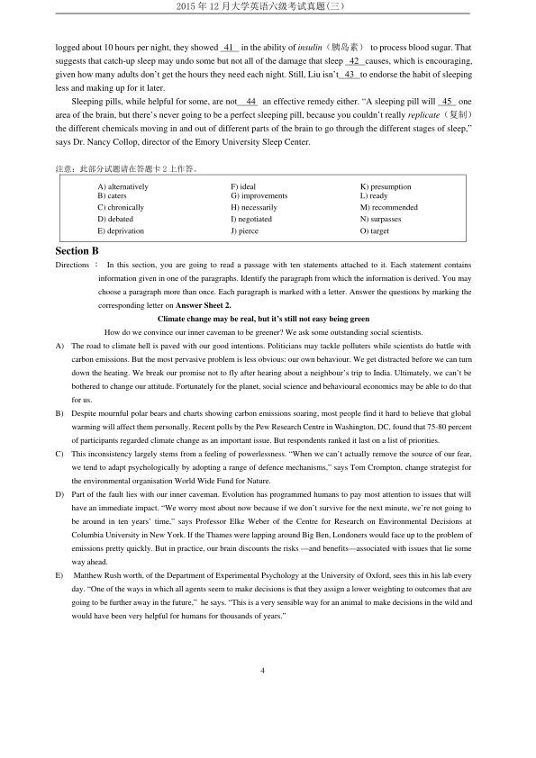
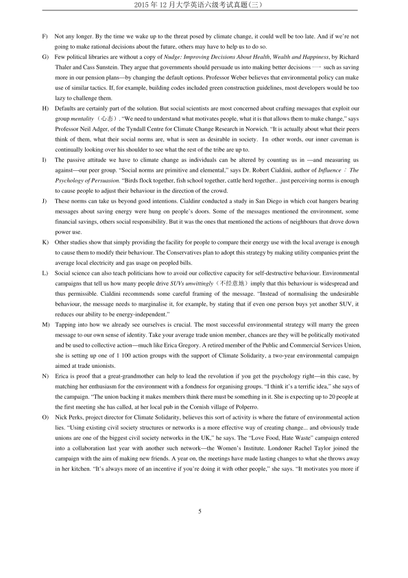
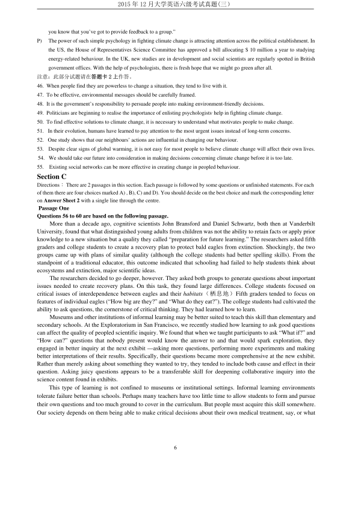
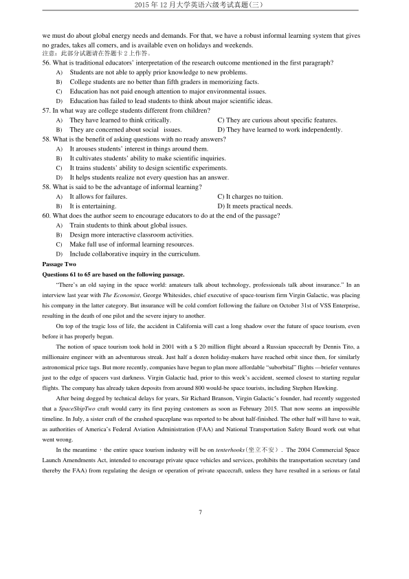
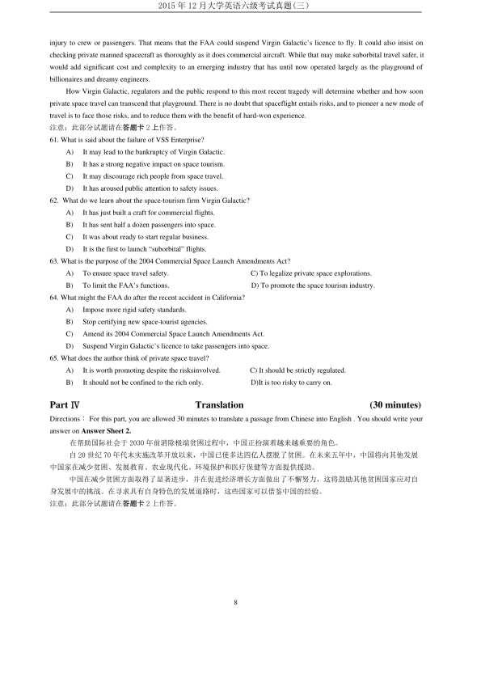

第 1 / 8 页

2015 年12 月大学英语六级考试真题(三）
2015 年12 月大学英语六级考试真题(三）
Part I
Writing
(30 minutes)
Directions：For this part, you are allowed 30 minutes to write a short essay based on the picture below. You should focus on the
harm caused by misleading information online. You are required to write at least 150 words but no more than 200 words.
注意：此部分试题请在答题卡1 上作答。
Part Ⅱ
Listening Comprehension
(30 minutes)
Section A
Directions：In this section, you will hear 8 short conversations and 2 long conversations. At the end of each conversation, one or
more questions will be asked about what was said. Both the conversation and the questions will be spoken only once. After each
question there will be a pause. During the pause, you must read the four choices marked A), B), C) and D), and decide which is
the best answer. Then mark the corresponding letter on Answer Sheet 1 with a single line through the centre.
注意：此部分试题请在答题卡1 上作答。
1.
A) She has completely recovered.
C) She is still in a critical condition.
B) She went into shock after an operation.
D) She is getting much better.
2.
A) Ordering a breakfast.
C) Buying a train ticket.
B) Booking a hotel room.
D) Fixing a compartment.
3. A)
Most borrowers never returned the books to her.
B) The man is the only one who brought her book back.
C) She never expected anyone to return the books to her.
D) Most of the books she lent out came back without jackets.
4. A)
She left her work early to get some bargains last Saturday.
B) She attended the supermarket’s grand opening ceremony.
C) She drove a full hour before finding a parking space.
D) She failed to get into the supermarket last Saturday.
5. A)
He is bothered by the pain in his neck.
C) He cannot afford to have a coffee break.
B) He cannot do his report without a computer.
D) He feels sorry to have missed the report.
6. A) Only top art students can show their works in the gallery.
B) The gallery space is big enough for the man’s paintings.
C) The woman would like to help with the exhibition layout.
D)
The man is uncertain how his art works will be received.
7.
A) The woman needs a temporary replacement for her assistant.
B) The man works in the same department as the woman does.
I just feel unfortunate to live in a world with so much misleading information!
查看 / 复制本页文字
2015 年12 月大学英语六级考试真题(三） 2015 年12 月大学英语六级考试真题(三） Part I Writing (30 minutes) Directions：For this part, you are allowed 30 minutes to write a short essay based on the picture below. You should focus on the harm caused by misleading information online. You are required to write at least 150 words but no more than 200 words. 注意：此部分试题请在答题卡1 上作答。 Part Ⅱ Listening Comprehension (30 minutes) Section A Directions：In this section, you will hear 8 short conversations and 2 long conversations. At the end of each conversation, one or more questions will be asked about what was said. Both the conversation and the questions will be spoken only once. After each question there will be a pause. During the pause, you must read the four choices marked A), B), C) and D), and decide which is the best answer. Then mark the corresponding letter on Answer Sheet 1 with a single line through the centre. 注意：此部分试题请在答题卡1 上作答。 1. A) She has completely recovered. C) She is still in a critical condition. B) She went into shock after an operation. D) She is getting much better. 2. A) Ordering a breakfast. C) Buying a train ticket. B) Booking a hotel room. D) Fixing a compartment. 3. A) Most borrowers never returned the books to her. B) The man is the only one who brought her book back. C) She never expected anyone to return the books to her. D) Most of the books she lent out came back without jackets. 4. A) She left her work early to get some bargains last Saturday. B) She attended the supermarket’s grand opening ceremony. C) She drove a full hour before finding a parking space. D) She failed to get into the supermarket last Saturday. 5. A) He is bothered by the pain in his neck. C) He cannot afford to have a coffee break. B) He cannot do his report without a computer. D) He feels sorry to have missed the report. 6. A) Only top art students can show their works in the gallery. B) The gallery space is big enough for the man’s paintings. C) The woman would like to help with the exhibition layout. D) The man is uncertain how his art works will be received. 7. A) The woman needs a temporary replacement for her assistant. B) The man works in the same department as the woman does. I just feel unfortunate to live in a world with so much misleading information!
第 2 / 8 页

2015 年12 月大学英语六级考试真题(三）
2
C) The woman will have to stay in hospital for a few days.
D) The man is capable of dealing with difficult people.
8. A)
It was better than the previous one.
C) It exaggerated the city’s economic problems.
B) It distorted the mayor’s speech.
D) It reflected the opinions of most economists.
Questions 9 to 12 are based on the conversation you have just heard.
9. A) To inform him of a problem they face.
C) To discuss the content of a project report.
B) To request him to purchase control desks.
D) To ask him to fix the dictating machine.
10.A) They quote the best price in the market.
C) They cannot deliver the steel sheets on time.
B) They manufacture and sell office furniture.
D) They cannot produce the steel sheets needed.
11. A) By marking down the unit price.
C) By allowing more time for delivery.
B) By accepting the penalty clauses.
D) By promising better after-sales service.
12. A) Give the customer a ten percent discount.
B) Claim compensation from the steel suppliers.
C) Ask the Buying Department to change suppliers.
D) Cancel the contract with the customer.
Questions 13 to 15 are based on the conversation you have just heard.
13. A) Stockbroker.
B) Physicist.
C) Mathematician.
D) Economist.
14. A) Improve computer programming.
C) Predict global population growth.
B) Explain certain natural phenomena.
D) Promote national financial health.
15. A) Their different educational backgrounds.
C) Chaos theory and its applications.
B) Changing attitudes toward nature.
D) The current global economic crisis.
Section B
Directions：In this section, you will hear 3 short passages. At the end of each passage, you will hear some questions. Both the
passage and the questions will be spoken only once. After you hear a question, you must choose the best answer from the four
choices marked A), B)，C) and D). Then mark the corresponding letter on Answer Sheet 1 with a single line through the centre.
注意：此部分试题请在答题卡1 上作答。
Passage One
Questions 16 to 18 are based on the passage you have just heard.
16.
A) They lay great emphasis on hard work.
C) They require high academic degrees.
B) They name 150 star engineers each year.
D) They have people with a very high IQ.
17.
A) Long years of job training.
C) Distinctive academic qualifications.
B) High emotional intelligence.
D) Devotion to the advance of science.
18.
A) Good interpersonal relationships.
C) Sophisticated equipment.
B) Rich working experience.
D) High motivation.
Passage Two
Questions 19 to 21 are based on the passage you have just heard.
19.
A) A diary.
C) A history textbook.
B) A fairy tale.
D) A biography.
20.
A) He was a sports fan.
C) He disliked school.
B) He loved adventures.
D) He liked hair-raising stories.
21.
A) Encourage people to undertake adventures.
C) Raise people’s environmental awareness.
B) Publicize his colorful and unique life stories.
D) Attract people to America’s national parks.
Passage Three
查看 / 复制本页文字
2015 年12 月大学英语六级考试真题(三） 2 C) The woman will have to stay in hospital for a few days. D) The man is capable of dealing with difficult people. 8. A) It was better than the previous one. C) It exaggerated the city’s economic problems. B) It distorted the mayor’s speech. D) It reflected the opinions of most economists. Questions 9 to 12 are based on the conversation you have just heard. 9. A) To inform him of a problem they face. C) To discuss the content of a project report. B) To request him to purchase control desks. D) To ask him to fix the dictating machine. 10.A) They quote the best price in the market. C) They cannot deliver the steel sheets on time. B) They manufacture and sell office furniture. D) They cannot produce the steel sheets needed. 11. A) By marking down the unit price. C) By allowing more time for delivery. B) By accepting the penalty clauses. D) By promising better after-sales service. 12. A) Give the customer a ten percent discount. B) Claim compensation from the steel suppliers. C) Ask the Buying Department to change suppliers. D) Cancel the contract with the customer. Questions 13 to 15 are based on the conversation you have just heard. 13. A) Stockbroker. B) Physicist. C) Mathematician. D) Economist. 14. A) Improve computer programming. C) Predict global population growth. B) Explain certain natural phenomena. D) Promote national financial health. 15. A) Their different educational backgrounds. C) Chaos theory and its applications. B) Changing attitudes toward nature. D) The current global economic crisis. Section B Directions：In this section, you will hear 3 short passages. At the end of each passage, you will hear some questions. Both the passage and the questions will be spoken only once. After you hear a question, you must choose the best answer from the four choices marked A), B)，C) and D). Then mark the corresponding letter on Answer Sheet 1 with a single line through the centre. 注意：此部分试题请在答题卡1 上作答。 Passage One Questions 16 to 18 are based on the passage you have just heard. 16. A) They lay great emphasis on hard work. C) They require high academic degrees. B) They name 150 star engineers each year. D) They have people with a very high IQ. 17. A) Long years of job training. C) Distinctive academic qualifications. B) High emotional intelligence. D) Devotion to the advance of science. 18. A) Good interpersonal relationships. C) Sophisticated equipment. B) Rich working experience. D) High motivation. Passage Two Questions 19 to 21 are based on the passage you have just heard. 19. A) A diary. C) A history textbook. B) A fairy tale. D) A biography. 20. A) He was a sports fan. C) He disliked school. B) He loved adventures. D) He liked hair-raising stories. 21. A) Encourage people to undertake adventures. C) Raise people’s environmental awareness. B) Publicize his colorful and unique life stories. D) Attract people to America’s national parks. Passage Three
第 3 / 8 页

2015 年12 月大学英语六级考试真题(三）
3
Questions 22 to 25 are based on the passage you have just heard.
22.
A) The first infected victim.
C) The doctor who first identified it.
B) A coastal village in Africa.
D) A river running through the Congo.
23.
A) They exhibit similar symptoms.
C) They have almost the same mortality rate
B) They can be treated with the same drug.
D) They have both disappeared for good.
24. A) By inhaling air polluted with the virus.
C) By drinking water from the Congo River.
B) By contacting contaminated body fluids.
D) By eating food grown in Sudan and Zaire.
25.
A) More strains will evolve from the Ebola virus.
B)
Scientists will eventually find cures for Ebola.
C)
Another Ebola epidemic may erupt sooner or later.
D)
Once infected, one will become immune to Ebola.
Section C
Directions：In this section, you will hear a passage three time. When the passage is read for the first time, you should listen
carefully for its general idea. When the passage is read for the second time, you are required to fill in the blanks with the exact
words you have just heard. Finally, when the passage is read for the third time, you should check what you have written.
注意：此部分试题请在答题卡1 上作答。
The ideal companion machine would not only look, feel, and sound friendly but would also be programmed to behave in an
agreeable manner. Those 26 that make interaction with other people enjoyable would be simulated as closely as possible, and
the machine would
27
charming, stimulating, and easygoing. Its informal conversational style would make interaction
comfortable, and yet the machine would remain slightly 28 and therefore interesting. In its first encounter it might be somewhat
hesitant and unassuming, but as it came to know the user it would progress to a more 29 and intimate style. The machine would
not be a passive 30 but would add its own suggestions, information, and opinions; it would sometimes 31 in developing or
changing the topic and would have a personality of its own.
The machine would convey presence. We have all seen how a computer’s use of personal names often 32 people and
leads them to treat the machine as if it were almost human. Such features are easily written into the software. By introducing
33
forcefulness and humor, the machine could be presented as a vivid and unique character.
Friendships are not made in a day, and the computer would be more acceptable as a friend if it 34 the gradual changes that
occur when one person is getting to know another. At an 35 time it might also express the kind of affection that stimulates
attachment and intimacy.
Part Ⅲ
Reading Comprehension
(40 minutes)
Section A
Directions：In this section, there is a passage with ten blanks. You are required to select one word for each blank from a list of
choices given in a word bank following the passage. Read the passage through carefully before making your choices. Each choice
in the bank is identified by a letter. Please mark the corresponding letter for each item on Answer Sheet 2 with a single line
through the centre. You may not use any of the words in the bank more than once.
Questions 36 to 45 are based on the following passage.
As it is, sleep is so undervalued that getting by on fewer hours has become a badge of honor. Plus, we live in a
culture that
36
to the late-nighter, from 24-hour grocery stores to online shopping sites that never close. It’s no
surprise, then, that more than half of American adults don’t get the 7 to 9 hours of shut-eye every night as
37 by
sleep experts.
Whether or not we can catch up on sleep—on the weekend, say —is a hotly 38 topic among sleep researchers.
The latest evidence suggests that while it isn’t
39 , it might help. When Liu, the UCLA sleep researcher and
professor of medicine, brought
40
sleep-restricted people into the lab for a weekend of sleep during which they
查看 / 复制本页文字
2015 年12 月大学英语六级考试真题(三） 3 Questions 22 to 25 are based on the passage you have just heard. 22. A) The first infected victim. C) The doctor who first identified it. B) A coastal village in Africa. D) A river running through the Congo. 23. A) They exhibit similar symptoms. C) They have almost the same mortality rate B) They can be treated with the same drug. D) They have both disappeared for good. 24. A) By inhaling air polluted with the virus. C) By drinking water from the Congo River. B) By contacting contaminated body fluids. D) By eating food grown in Sudan and Zaire. 25. A) More strains will evolve from the Ebola virus. B) Scientists will eventually find cures for Ebola. C) Another Ebola epidemic may erupt sooner or later. D) Once infected, one will become immune to Ebola. Section C Directions：In this section, you will hear a passage three time. When the passage is read for the first time, you should listen carefully for its general idea. When the passage is read for the second time, you are required to fill in the blanks with the exact words you have just heard. Finally, when the passage is read for the third time, you should check what you have written. 注意：此部分试题请在答题卡1 上作答。 The ideal companion machine would not only look, feel, and sound friendly but would also be programmed to behave in an agreeable manner. Those 26 that make interaction with other people enjoyable would be simulated as closely as possible, and the machine would 27 charming, stimulating, and easygoing. Its informal conversational style would make interaction comfortable, and yet the machine would remain slightly 28 and therefore interesting. In its first encounter it might be somewhat hesitant and unassuming, but as it came to know the user it would progress to a more 29 and intimate style. The machine would not be a passive 30 but would add its own suggestions, information, and opinions; it would sometimes 31 in developing or changing the topic and would have a personality of its own. The machine would convey presence. We have all seen how a computer’s use of personal names often 32 people and leads them to treat the machine as if it were almost human. Such features are easily written into the software. By introducing 33 forcefulness and humor, the machine could be presented as a vivid and unique character. Friendships are not made in a day, and the computer would be more acceptable as a friend if it 34 the gradual changes that occur when one person is getting to know another. At an 35 time it might also express the kind of affection that stimulates attachment and intimacy. Part Ⅲ Reading Comprehension (40 minutes) Section A Directions：In this section, there is a passage with ten blanks. You are required to select one word for each blank from a list of choices given in a word bank following the passage. Read the passage through carefully before making your choices. Each choice in the bank is identified by a letter. Please mark the corresponding letter for each item on Answer Sheet 2 with a single line through the centre. You may not use any of the words in the bank more than once. Questions 36 to 45 are based on the following passage. As it is, sleep is so undervalued that getting by on fewer hours has become a badge of honor. Plus, we live in a culture that 36 to the late-nighter, from 24-hour grocery stores to online shopping sites that never close. It’s no surprise, then, that more than half of American adults don’t get the 7 to 9 hours of shut-eye every night as 37 by sleep experts. Whether or not we can catch up on sleep—on the weekend, say —is a hotly 38 topic among sleep researchers. The latest evidence suggests that while it isn’t 39 , it might help. When Liu, the UCLA sleep researcher and professor of medicine, brought 40 sleep-restricted people into the lab for a weekend of sleep during which they
第 4 / 8 页

2015 年12 月大学英语六级考试真题(三）
4
logged about 10 hours per night, they showed 41
in the ability of insulin（胰岛素）to process blood sugar. That
suggests that catch-up sleep may undo some but not all of the damage that sleep 42 causes, which is encouraging,
given how many adults don’t get the hours they need each night. Still, Liu isn’t 43 to endorse the habit of sleeping
less and making up for it later.
Sleeping pills, while helpful for some, are not
44 an effective remedy either. “A sleeping pill will 45 one
area of the brain, but there’s never going to be a perfect sleeping pill, because you couldn’t really replicate（复制）
the different chemicals moving in and out of different parts of the brain to go through the different stages of sleep,”
says Dr. Nancy Collop, director of the Emory University Sleep Center.
注意：此部分试题请在答题卡2 上作答。
Section B
Directions：In this section, you are going to read a passage with ten statements attached to it. Each statement contains
information given in one of the paragraphs. Identify the paragraph from which the information is derived. You may
choose a paragraph more than once. Each paragraph is marked with a letter. Answer the questions by marking the
corresponding letter on Answer Sheet 2.
Climate change may be real, but it’s still not easy being green
How do we convince our inner caveman to be greener? We ask some outstanding social scientists.
A)
The road to climate hell is paved with our good intentions. Politicians may tackle polluters while scientists do battle with
carbon emissions. But the most pervasive problem is less obvious: our own behaviour. We get distracted before we can turn
down the heating. We break our promise not to fly after hearing about a neighbour’s trip to India. Ultimately, we can’t be
bothered to change our attitude. Fortunately for the planet, social science and behavioural economics may be able to do that
for us.
B)
Despite mournful polar bears and charts showing carbon emissions soaring, most people find it hard to believe that global
warming will affect them personally. Recent polls by the Pew Research Centre in Washington, DC, found that 75-80 percent
of participants regarded climate change as an important issue. But respondents ranked it last on a list of priorities.
C)
This inconsistency largely stems from a feeling of powerlessness. “When we can’t actually remove the source of our fear,
we tend to adapt psychologically by adopting a range of defence mechanisms,” says Tom Crompton, change strategist for
the environmental organisation World Wide Fund for Nature.
D)
Part of the fault lies with our inner caveman. Evolution has programmed humans to pay most attention to issues that will
have an immediate impact. “We worry most about now because if we don’t survive for the next minute, we’re not going to
be around in ten years’ time,” says Professor Elke Weber of the Centre for Research on Environmental Decisions at
Columbia University in New York. If the Thames were lapping around Big Ben, Londoners would face up to the problem of
emissions pretty quickly. But in practice, our brain discounts the risks —and benefits—associated with issues that lie some
way ahead.
E)
Matthew Rush worth, of the Department of Experimental Psychology at the University of Oxford, sees this in his lab every
day. “One of the ways in which all agents seem to make decisions is that they assign a lower weighting to outcomes that are
going to be further away in the future,” he says. “This is a very sensible way for an animal to make decisions in the wild and
would have been very helpful for humans for thousands of years.”
A) alternatively
F) ideal
K) presumption
B) caters
G) improvements
L) ready
C) chronically
H) necessarily
M) recommended
D) debated
I) negotiated
N) surpasses
E) deprivation
J) pierce
O) target
查看 / 复制本页文字
2015 年12 月大学英语六级考试真题(三） 4 logged about 10 hours per night, they showed 41 in the ability of insulin（胰岛素）to process blood sugar. That suggests that catch-up sleep may undo some but not all of the damage that sleep 42 causes, which is encouraging, given how many adults don’t get the hours they need each night. Still, Liu isn’t 43 to endorse the habit of sleeping less and making up for it later. Sleeping pills, while helpful for some, are not 44 an effective remedy either. “A sleeping pill will 45 one area of the brain, but there’s never going to be a perfect sleeping pill, because you couldn’t really replicate（复制） the different chemicals moving in and out of different parts of the brain to go through the different stages of sleep,” says Dr. Nancy Collop, director of the Emory University Sleep Center. 注意：此部分试题请在答题卡2 上作答。 Section B Directions：In this section, you are going to read a passage with ten statements attached to it. Each statement contains information given in one of the paragraphs. Identify the paragraph from which the information is derived. You may choose a paragraph more than once. Each paragraph is marked with a letter. Answer the questions by marking the corresponding letter on Answer Sheet 2. Climate change may be real, but it’s still not easy being green How do we convince our inner caveman to be greener? We ask some outstanding social scientists. A) The road to climate hell is paved with our good intentions. Politicians may tackle polluters while scientists do battle with carbon emissions. But the most pervasive problem is less obvious: our own behaviour. We get distracted before we can turn down the heating. We break our promise not to fly after hearing about a neighbour’s trip to India. Ultimately, we can’t be bothered to change our attitude. Fortunately for the planet, social science and behavioural economics may be able to do that for us. B) Despite mournful polar bears and charts showing carbon emissions soaring, most people find it hard to believe that global warming will affect them personally. Recent polls by the Pew Research Centre in Washington, DC, found that 75-80 percent of participants regarded climate change as an important issue. But respondents ranked it last on a list of priorities. C) This inconsistency largely stems from a feeling of powerlessness. “When we can’t actually remove the source of our fear, we tend to adapt psychologically by adopting a range of defence mechanisms,” says Tom Crompton, change strategist for the environmental organisation World Wide Fund for Nature. D) Part of the fault lies with our inner caveman. Evolution has programmed humans to pay most attention to issues that will have an immediate impact. “We worry most about now because if we don’t survive for the next minute, we’re not going to be around in ten years’ time,” says Professor Elke Weber of the Centre for Research on Environmental Decisions at Columbia University in New York. If the Thames were lapping around Big Ben, Londoners would face up to the problem of emissions pretty quickly. But in practice, our brain discounts the risks —and benefits—associated with issues that lie some way ahead. E) Matthew Rush worth, of the Department of Experimental Psychology at the University of Oxford, sees this in his lab every day. “One of the ways in which all agents seem to make decisions is that they assign a lower weighting to outcomes that are going to be further away in the future,” he says. “This is a very sensible way for an animal to make decisions in the wild and would have been very helpful for humans for thousands of years.” A) alternatively F) ideal K) presumption B) caters G) improvements L) ready C) chronically H) necessarily M) recommended D) debated I) negotiated N) surpasses E) deprivation J) pierce O) target
第 5 / 8 页

2015 年12 月大学英语六级考试真题(三）
5
F)
Not any longer. By the time we wake up to the threat posed by climate change, it could well be too late. And if we’re not
going to make rational decisions about the future, others may have to help us to do so.
G)
Few political libraries are without a copy of Nudge: Improving Decisions About Health, Wealth and Happiness, by Richard
Thaler and Cass Sunstein. They argue that governments should persuade us into making better decisions 一such as saving
more in our pension plans—by changing the default options. Professor Weber believes that environmental policy can make
use of similar tactics. If, for example, building codes included green construction guidelines, most developers would be too
lazy to challenge them.
H)
Defaults are certainly part of the solution. But social scientists are most concerned about crafting messages that exploit our
group mentality（心态）. “We need to understand what motivates people, what it is that allows them to make change,” says
Professor Neil Adger, of the Tyndall Centre for Climate Change Research in Norwich. “It is actually about what their peers
think of them, what their social norms are, what is seen as desirable in society. I n other words, our inner caveman is
continually looking over his shoulder to see what the rest of the tribe are up to.
I)
The passive attitude we have to climate change as individuals can be altered by counting us in —and measuring us
against—our peer group. “Social norms are primitive and elemental,” says Dr. Robert Cialdini, author of Influence：The
Psychology of Persuasion. “Birds flock together, fish school together, cattle herd together.. .just perceiving norms is enough
to cause people to adjust their behaviour in the direction of the crowd.
J)
These norms can take us beyond good intentions. Cialdinr conducted a study in San Diego in which coat hangers bearing
messages about saving energy were hung on people’s doors. Some of the messages mentioned the environment, some
financial savings, others social responsibility. But it was the ones that mentioned the actions of neighbours that drove down
power use.
K)
Other studies show that simply providing the facility for people to compare their energy use with the local average is enough
to cause them to modify their behaviour. The Conservatives plan to adopt this strategy by making utility companies print the
average local electricity and gas usage on peopled bills.
L)
Social science can also teach politicians how to avoid our collective capacity for self-destructive behaviour. Environmental
campaigns that tell us how many people drive SUVs unwittingly（不经意地）imply that this behaviour is widespread and
thus permissible. Cialdini recommends some careful framing of the message. “Instead of normalising the undesirable
behaviour, the message needs to marginalise it, for example, by stating that if even one person buys yet another SUV, it
reduces our ability to be energy-independent.”
M)
Tapping into how we already see ourselves is crucial. The most successful environmental strategy will marry the green
message to our own sense of identity. Take your average trade union member, chances are they will be politically motivated
and be used to collective action—much like Erica Gregory. A retired member of the Public and Commercial Services Union,
she is setting up one of 1 100 action groups with the support of Climate Solidarity, a two-year environmental campaign
aimed at trade unionists.
N)
Erica is proof that a great-grandmother can help to lead the revolution if you get the psychology right—in this case, by
matching her enthusiasm for the environment with a fondness for organising groups. “I think it’s a terrific idea,” she says of
the campaign. “The union backing it makes members think there must be something in it. She is expecting up to 20 people at
the first meeting she has called, at her local pub in the Cornish village of Polperro.
O)
Nick Perks, project director for Climate Solidarity, believes this sort of activity is where the future of environmental action
lies. “Using existing civil society structures or networks is a more effective way of creating change... and obviously trade
unions are one of the biggest civil society networks in the UK,” he says. The “Love Food, Hate Waste” campaign entered
into a collaboration last year with another such network—the Women’s Institute. Londoner Rachel Taylor joined the
campaign with the aim of making new friends. A year on, the meetings have made lasting changes to what she throws away
in her kitchen. “It’s always more of an incentive if you’re doing it with other people,” she says. “It motivates you more if
查看 / 复制本页文字
2015 年12 月大学英语六级考试真题(三） 5 F) Not any longer. By the time we wake up to the threat posed by climate change, it could well be too late. And if we’re not going to make rational decisions about the future, others may have to help us to do so. G) Few political libraries are without a copy of Nudge: Improving Decisions About Health, Wealth and Happiness, by Richard Thaler and Cass Sunstein. They argue that governments should persuade us into making better decisions 一such as saving more in our pension plans—by changing the default options. Professor Weber believes that environmental policy can make use of similar tactics. If, for example, building codes included green construction guidelines, most developers would be too lazy to challenge them. H) Defaults are certainly part of the solution. But social scientists are most concerned about crafting messages that exploit our group mentality（心态）. “We need to understand what motivates people, what it is that allows them to make change,” says Professor Neil Adger, of the Tyndall Centre for Climate Change Research in Norwich. “It is actually about what their peers think of them, what their social norms are, what is seen as desirable in society. I n other words, our inner caveman is continually looking over his shoulder to see what the rest of the tribe are up to. I) The passive attitude we have to climate change as individuals can be altered by counting us in —and measuring us against—our peer group. “Social norms are primitive and elemental,” says Dr. Robert Cialdini, author of Influence：The Psychology of Persuasion. “Birds flock together, fish school together, cattle herd together.. .just perceiving norms is enough to cause people to adjust their behaviour in the direction of the crowd. J) These norms can take us beyond good intentions. Cialdinr conducted a study in San Diego in which coat hangers bearing messages about saving energy were hung on people’s doors. Some of the messages mentioned the environment, some financial savings, others social responsibility. But it was the ones that mentioned the actions of neighbours that drove down power use. K) Other studies show that simply providing the facility for people to compare their energy use with the local average is enough to cause them to modify their behaviour. The Conservatives plan to adopt this strategy by making utility companies print the average local electricity and gas usage on peopled bills. L) Social science can also teach politicians how to avoid our collective capacity for self-destructive behaviour. Environmental campaigns that tell us how many people drive SUVs unwittingly（不经意地）imply that this behaviour is widespread and thus permissible. Cialdini recommends some careful framing of the message. “Instead of normalising the undesirable behaviour, the message needs to marginalise it, for example, by stating that if even one person buys yet another SUV, it reduces our ability to be energy-independent.” M) Tapping into how we already see ourselves is crucial. The most successful environmental strategy will marry the green message to our own sense of identity. Take your average trade union member, chances are they will be politically motivated and be used to collective action—much like Erica Gregory. A retired member of the Public and Commercial Services Union, she is setting up one of 1 100 action groups with the support of Climate Solidarity, a two-year environmental campaign aimed at trade unionists. N) Erica is proof that a great-grandmother can help to lead the revolution if you get the psychology right—in this case, by matching her enthusiasm for the environment with a fondness for organising groups. “I think it’s a terrific idea,” she says of the campaign. “The union backing it makes members think there must be something in it. She is expecting up to 20 people at the first meeting she has called, at her local pub in the Cornish village of Polperro. O) Nick Perks, project director for Climate Solidarity, believes this sort of activity is where the future of environmental action lies. “Using existing civil society structures or networks is a more effective way of creating change... and obviously trade unions are one of the biggest civil society networks in the UK,” he says. The “Love Food, Hate Waste” campaign entered into a collaboration last year with another such network—the Women’s Institute. Londoner Rachel Taylor joined the campaign with the aim of making new friends. A year on, the meetings have made lasting changes to what she throws away in her kitchen. “It’s always more of an incentive if you’re doing it with other people,” she says. “It motivates you more if
第 6 / 8 页

2015 年12 月大学英语六级考试真题(三）
6
you know that you’ve got to provide feedback to a group.”
P)
The power of such simple psychology in fighting climate change is attracting attention across the political establishment. In
the US, the House of Representatives Science Committee has approved a bill allocating $ 10 million a year to studying
energy-related behaviour. In the UK, new studies are in development and social scientists are regularly spotted in British
government offices. With the help of psychologists, there is fresh hope that we might go green after all.
注意：此部分试题请在答题卡2 上作答。
46. When people find they are powerless to change a situation, they tend to live with it.
47. To be effective, environmental messages should be carefully framed.
48. It is the government’s responsibility to persuade people into making environment-friendly decisions.
49. Politicians are beginning to realise the importance of enlisting psychologists, help in fighting climate change.
50. To find effective solutions to climate change, it is necessary to understand what motivates people to make change.
51. In their evolution, humans have learned to pay attention to the most urgent issues instead of long-term concerns.
52. One study shows that our neighbours’ actions are influential in changing our behaviour.
53.
Despite clear signs of global warming, it is not easy for most people to believe climate change will affect their own lives.
54. We should take our future into consideration in making decisions concerning climate change before it is too late.
55.
Existing social networks can be more effective in creating change in peopled behaviour.
Section C
Directions：There are 2 passages in this section. Each passage is followed by some questions or unfinished statements. For each
of them there are four choices marked A) , B), C) and D). You should decide on the best choice and mark the corresponding letter
on Answer Sheet 2 with a single line through the centre.
Passage One
Questions 56 to 60 are based on the following passage.
More than a decade ago, cognitive scientists John Bransford and Daniel Schwartz, both then at Vanderbilt
University, found that what distinguished young adults from children was not the ability to retain facts or apply prior
knowledge to a new situation but a quality they called “preparation for future learning.” The researchers asked fifth
graders and college students to create a recovery plan to protect bald eagles from extinction. Shockingly, the two
groups came up with plans of similar quality (although the college students had better spelling skills). From the
standpoint of a traditional educator, this outcome indicated that schooling had failed to help students think about
ecosystems and extinction, major scientific ideas.
The researchers decided to go deeper, however. They asked both groups to generate questions about important
issues needed to create recovery plans. On this task, they found large differences. College students focused on
critical issues of interdependence between eagles and their habitats（栖息地）Fifth graders tended to focus on
features of individual eagles (“How big are they?” and “What do they eat?”). The college students had cultivated the
ability to ask questions, the cornerstone of critical thinking. They had learned how to learn.
Museums and other institutions of informal learning may be better suited to teach this skill than elementary and
secondary schools. At the Exploratorium in San Francisco, we recently studied how learning to ask good questions
can affect the quality of peopled scientific inquiry. We found that when we taught participants to ask “What if?” and
“How can?” questions that nobody present would know the answer to and that would spark exploration, they
engaged in better inquiry at the next exhibit —asking more questions, performing more experiments and making
better interpretations of their results. Specifically, their questions became more comprehensive at the new exhibit.
Rather than merely asking about something they wanted to try, they tended to include both cause and effect in their
question. Asking juicy questions appears to be a transferable skill for deepening collaborative inquiry into the
science content found in exhibits.
This type of learning is not confined to museums or institutional settings. Informal learning environments
tolerate failure better than schools. Perhaps many teachers have too little time to allow students to form and pursue
their own questions and too much ground to cover in the curriculum. But people must acquire this skill somewhere.
Our society depends on them being able to make critical decisions about their own medical treatment, say, or what
查看 / 复制本页文字
2015 年12 月大学英语六级考试真题(三） 6 you know that you’ve got to provide feedback to a group.” P) The power of such simple psychology in fighting climate change is attracting attention across the political establishment. In the US, the House of Representatives Science Committee has approved a bill allocating $ 10 million a year to studying energy-related behaviour. In the UK, new studies are in development and social scientists are regularly spotted in British government offices. With the help of psychologists, there is fresh hope that we might go green after all. 注意：此部分试题请在答题卡2 上作答。 46. When people find they are powerless to change a situation, they tend to live with it. 47. To be effective, environmental messages should be carefully framed. 48. It is the government’s responsibility to persuade people into making environment-friendly decisions. 49. Politicians are beginning to realise the importance of enlisting psychologists, help in fighting climate change. 50. To find effective solutions to climate change, it is necessary to understand what motivates people to make change. 51. In their evolution, humans have learned to pay attention to the most urgent issues instead of long-term concerns. 52. One study shows that our neighbours’ actions are influential in changing our behaviour. 53. Despite clear signs of global warming, it is not easy for most people to believe climate change will affect their own lives. 54. We should take our future into consideration in making decisions concerning climate change before it is too late. 55. Existing social networks can be more effective in creating change in peopled behaviour. Section C Directions：There are 2 passages in this section. Each passage is followed by some questions or unfinished statements. For each of them there are four choices marked A) , B), C) and D). You should decide on the best choice and mark the corresponding letter on Answer Sheet 2 with a single line through the centre. Passage One Questions 56 to 60 are based on the following passage. More than a decade ago, cognitive scientists John Bransford and Daniel Schwartz, both then at Vanderbilt University, found that what distinguished young adults from children was not the ability to retain facts or apply prior knowledge to a new situation but a quality they called “preparation for future learning.” The researchers asked fifth graders and college students to create a recovery plan to protect bald eagles from extinction. Shockingly, the two groups came up with plans of similar quality (although the college students had better spelling skills). From the standpoint of a traditional educator, this outcome indicated that schooling had failed to help students think about ecosystems and extinction, major scientific ideas. The researchers decided to go deeper, however. They asked both groups to generate questions about important issues needed to create recovery plans. On this task, they found large differences. College students focused on critical issues of interdependence between eagles and their habitats（栖息地）Fifth graders tended to focus on features of individual eagles (“How big are they?” and “What do they eat?”). The college students had cultivated the ability to ask questions, the cornerstone of critical thinking. They had learned how to learn. Museums and other institutions of informal learning may be better suited to teach this skill than elementary and secondary schools. At the Exploratorium in San Francisco, we recently studied how learning to ask good questions can affect the quality of peopled scientific inquiry. We found that when we taught participants to ask “What if?” and “How can?” questions that nobody present would know the answer to and that would spark exploration, they engaged in better inquiry at the next exhibit —asking more questions, performing more experiments and making better interpretations of their results. Specifically, their questions became more comprehensive at the new exhibit. Rather than merely asking about something they wanted to try, they tended to include both cause and effect in their question. Asking juicy questions appears to be a transferable skill for deepening collaborative inquiry into the science content found in exhibits. This type of learning is not confined to museums or institutional settings. Informal learning environments tolerate failure better than schools. Perhaps many teachers have too little time to allow students to form and pursue their own questions and too much ground to cover in the curriculum. But people must acquire this skill somewhere. Our society depends on them being able to make critical decisions about their own medical treatment, say, or what
第 7 / 8 页

2015 年12 月大学英语六级考试真题(三）
7
we must do about global energy needs and demands. For that, we have a robust informal learning system that gives
no grades, takes all comers, and is available even on holidays and weekends.
注意：此部分试题请在答题卡2 上作答。
56. What is traditional educators’ interpretation of the research outcome mentioned in the first paragraph?
A)
Students are not able to apply prior knowledge to new problems.
B)
College students are no better than fifth graders in memorizing facts.
C)
Education has not paid enough attention to major environmental issues.
D)
Education has failed to lead students to think about major scientific ideas.
57. In what way are college students different from children?
A)
They have learned to think critically.
C) They are curious about specific features.
B)
They are concerned about social issues.
D) They have learned to work independently.
58. What is the benefit of asking questions with no ready answers?
A)
It arouses students’ interest in things around them.
B)
It cultivates students’ ability to make scientific inquiries.
C)
It trains students’ ability to design scientific experiments.
D)
It helps students realize not every question has an answer.
58. What is said to be the advantage of informal learning?
A)
It allows for failures.
C) It charges no tuition.
B)
It is entertaining.
D) It meets practical needs.
60. What does the author seem to encourage educators to do at the end of the passage?
A)
Train students to think about global issues.
B)
Design more interactive classroom activities.
C)
Make full use of informal learning resources.
D)
Include collaborative inquiry in the curriculum.
Passage Two
Questions 61 to 65 are based on the following passage.
“There’s an old saying in the space world: amateurs talk about technology, professionals talk about insurance.” In an
interview last year with The Economist, George Whitesides, chief executive of space-tourism firm Virgin Galactic, was placing
his company in the latter category. But insurance will be cold comfort following the failure on October 31st of VSS Enterprise,
resulting in the death of one pilot and the severe injury to another.
On top of the tragic loss of life, the accident in California will cast a long shadow over the future of space tourism, even
before it has properly begun.
The notion of space tourism took hold in 2001 with a $ 20 million flight aboard a Russian spacecraft by Dennis Tito, a
millionaire engineer with an adventurous streak. Just half a dozen holiday-makers have reached orbit since then, for similarly
astronomical price tags. But more recently, companies have begun to plan more affordable “suborbital” flights —briefer ventures
just to the edge of spacers vast darkness. Virgin Galactic had, prior to this week’s accident, seemed closest to starting regular
flights. The company has already taken deposits from around 800 would-be space tourists, including Stephen Hawking.
After being dogged by technical delays for years, Sir Richard Branson, Virgin Galactic’s founder, had recently suggested
that a SpaceShipTwo craft would carry its first paying customers as soon as February 2015. That now seems an impossible
timeline. In July, a sister craft of the crashed spaceplane was reported to be about half-finished. The other half will have to wait,
as authorities of America’s Federal Aviation Administration (FAA) and National Transportation Safety Board work out what
went wrong.
In the meantime，the entire space tourism industry will be on tenterhooks(坐立不安）. The 2004 Commercial Space
Launch Amendments Act, intended to encourage private space vehicles and services, prohibits the transportation secretary (and
thereby the FAA) from regulating the design or operation of private spacecraft, unless they have resulted in a serious or fatal
查看 / 复制本页文字
2015 年12 月大学英语六级考试真题(三） 7 we must do about global energy needs and demands. For that, we have a robust informal learning system that gives no grades, takes all comers, and is available even on holidays and weekends. 注意：此部分试题请在答题卡2 上作答。 56. What is traditional educators’ interpretation of the research outcome mentioned in the first paragraph? A) Students are not able to apply prior knowledge to new problems. B) College students are no better than fifth graders in memorizing facts. C) Education has not paid enough attention to major environmental issues. D) Education has failed to lead students to think about major scientific ideas. 57. In what way are college students different from children? A) They have learned to think critically. C) They are curious about specific features. B) They are concerned about social issues. D) They have learned to work independently. 58. What is the benefit of asking questions with no ready answers? A) It arouses students’ interest in things around them. B) It cultivates students’ ability to make scientific inquiries. C) It trains students’ ability to design scientific experiments. D) It helps students realize not every question has an answer. 58. What is said to be the advantage of informal learning? A) It allows for failures. C) It charges no tuition. B) It is entertaining. D) It meets practical needs. 60. What does the author seem to encourage educators to do at the end of the passage? A) Train students to think about global issues. B) Design more interactive classroom activities. C) Make full use of informal learning resources. D) Include collaborative inquiry in the curriculum. Passage Two Questions 61 to 65 are based on the following passage. “There’s an old saying in the space world: amateurs talk about technology, professionals talk about insurance.” In an interview last year with The Economist, George Whitesides, chief executive of space-tourism firm Virgin Galactic, was placing his company in the latter category. But insurance will be cold comfort following the failure on October 31st of VSS Enterprise, resulting in the death of one pilot and the severe injury to another. On top of the tragic loss of life, the accident in California will cast a long shadow over the future of space tourism, even before it has properly begun. The notion of space tourism took hold in 2001 with a $ 20 million flight aboard a Russian spacecraft by Dennis Tito, a millionaire engineer with an adventurous streak. Just half a dozen holiday-makers have reached orbit since then, for similarly astronomical price tags. But more recently, companies have begun to plan more affordable “suborbital” flights —briefer ventures just to the edge of spacers vast darkness. Virgin Galactic had, prior to this week’s accident, seemed closest to starting regular flights. The company has already taken deposits from around 800 would-be space tourists, including Stephen Hawking. After being dogged by technical delays for years, Sir Richard Branson, Virgin Galactic’s founder, had recently suggested that a SpaceShipTwo craft would carry its first paying customers as soon as February 2015. That now seems an impossible timeline. In July, a sister craft of the crashed spaceplane was reported to be about half-finished. The other half will have to wait, as authorities of America’s Federal Aviation Administration (FAA) and National Transportation Safety Board work out what went wrong. In the meantime，the entire space tourism industry will be on tenterhooks(坐立不安）. The 2004 Commercial Space Launch Amendments Act, intended to encourage private space vehicles and services, prohibits the transportation secretary (and thereby the FAA) from regulating the design or operation of private spacecraft, unless they have resulted in a serious or fatal
第 8 / 8 页

2015 年12 月大学英语六级考试真题(三）
8
injury to crew or passengers. That means that the FAA could suspend Virgin Galactic’s licence to fly. It could also insist on
checking private manned spacecraft as thoroughly as it does commercial aircraft. While that may make suborbital travel safer, it
would add significant cost and complexity to an emerging industry that has until now operated largely as the playground of
billionaires and dreamy engineers.
How Virgin Galactic, regulators and the public respond to this most recent tragedy will determine whether and how soon
private space travel can transcend that playground. There is no doubt that spaceflight entails risks, and to pioneer a new mode of
travel is to face those risks, and to reduce them with the benefit of hard-won experience.
注意：此部分试题请在答题卡2 上作答。
61. What is said about the failure of VSS Enterprise?
A)
It may lead to the bankruptcy of Virgin Galactic.
B)
It has a strong negative impact on space tourism.
C)
It may discourage rich people from space travel.
D)
It has aroused public attention to safety issues.
62. What do we learn about the space-tourism firm Virgin Galactic?
A)
It has just built a craft for commercial flights.
B)
It has sent half a dozen passengers into space.
C)
It was about ready to start regular business.
D)
It is the first to launch “suborbital” flights.
63. What is the purpose of the 2004 Commercial Space Launch Amendments Act?
A)
To ensure space travel safety.
C) To legalize private space explorations.
B)
To limit the FAA’s functions.
D) To promote the space tourism industry.
64. What might the FAA do after the recent accident in California?
A)
Impose more rigid safety standards.
B)
Stop certifying new space-tourist agencies.
C)
Amend its 2004 Commercial Space Launch Amendments Act.
D)
Suspend Virgin Galactic’s licence to take passengers into space.
65. What does the author think of private space travel?
A)
It is worth promoting despite the risksinvolved.
C) It should be strictly regulated.
B)
It should not be confined to the rich only.
D)It is too risky to carry on.
Part Ⅳ
Translation
(30 minutes)
Directions：For this part, you are allowed 30 minutes to translate a passage from Chinese into English . You should write your
answer on Answer Sheet 2.
在帮助国际社会于2030 年前消除极端贫困过程中，中国正扮演着越来越重要的角色。
自20 世纪70 年代末实施改革开放以来，中国已使多达四亿人摆脱了贫困。在未来五年中，中国将向其他发展
中国家在减少贫困、发展教育、农业现代化、环境保护和医疗保健等方面提供援助。
中国在减少贫困方面取得了显著进步，并在促进经济增长方面做出了不懈努力，这将鼓励其他贫困国家应对自
身发展中的挑战。在寻求具有自身特色的发展道路时，这些国家可以借鉴中国的经验。
注意：此部分试题请在答题卡2 上作答。
查看 / 复制本页文字
2015 年12 月大学英语六级考试真题(三） 8 injury to crew or passengers. That means that the FAA could suspend Virgin Galactic’s licence to fly. It could also insist on checking private manned spacecraft as thoroughly as it does commercial aircraft. While that may make suborbital travel safer, it would add significant cost and complexity to an emerging industry that has until now operated largely as the playground of billionaires and dreamy engineers. How Virgin Galactic, regulators and the public respond to this most recent tragedy will determine whether and how soon private space travel can transcend that playground. There is no doubt that spaceflight entails risks, and to pioneer a new mode of travel is to face those risks, and to reduce them with the benefit of hard-won experience. 注意：此部分试题请在答题卡2 上作答。 61. What is said about the failure of VSS Enterprise? A) It may lead to the bankruptcy of Virgin Galactic. B) It has a strong negative impact on space tourism. C) It may discourage rich people from space travel. D) It has aroused public attention to safety issues. 62. What do we learn about the space-tourism firm Virgin Galactic? A) It has just built a craft for commercial flights. B) It has sent half a dozen passengers into space. C) It was about ready to start regular business. D) It is the first to launch “suborbital” flights. 63. What is the purpose of the 2004 Commercial Space Launch Amendments Act? A) To ensure space travel safety. C) To legalize private space explorations. B) To limit the FAA’s functions. D) To promote the space tourism industry. 64. What might the FAA do after the recent accident in California? A) Impose more rigid safety standards. B) Stop certifying new space-tourist agencies. C) Amend its 2004 Commercial Space Launch Amendments Act. D) Suspend Virgin Galactic’s licence to take passengers into space. 65. What does the author think of private space travel? A) It is worth promoting despite the risksinvolved. C) It should be strictly regulated. B) It should not be confined to the rich only. D)It is too risky to carry on. Part Ⅳ Translation (30 minutes) Directions：For this part, you are allowed 30 minutes to translate a passage from Chinese into English . You should write your answer on Answer Sheet 2. 在帮助国际社会于2030 年前消除极端贫困过程中，中国正扮演着越来越重要的角色。 自20 世纪70 年代末实施改革开放以来，中国已使多达四亿人摆脱了贫困。在未来五年中，中国将向其他发展 中国家在减少贫困、发展教育、农业现代化、环境保护和医疗保健等方面提供援助。 中国在减少贫困方面取得了显著进步，并在促进经济增长方面做出了不懈努力，这将鼓励其他贫困国家应对自 身发展中的挑战。在寻求具有自身特色的发展道路时，这些国家可以借鉴中国的经验。 注意：此部分试题请在答题卡2 上作答。